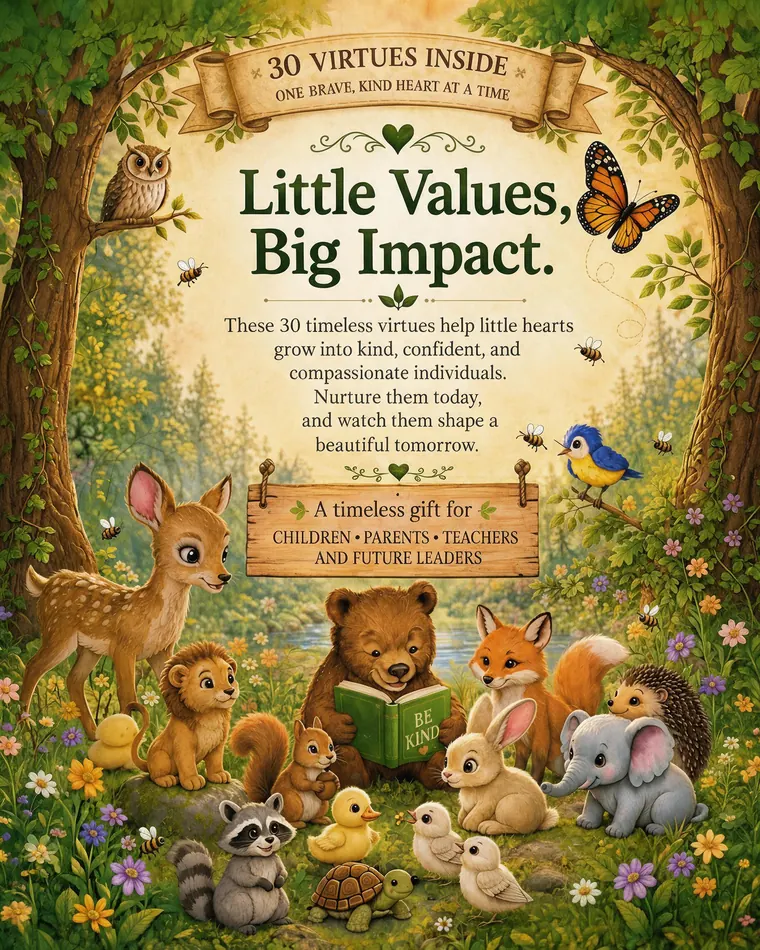

Teaching courage to young children
Courage is not the absence of fear — it is trying anyway. Small moments build it best.

A brave child is not a fearless child. Courage is the shaky voice that still speaks up, the hand that still goes up, the first step onto the stage. Children learn courage the same way they learn anything else: in small, practised moments, with an adult nearby who believes they can do it.
Name the feeling first
Before you ask a child to be brave, help them name what they feel: "That looks scary. Your heart is beating fast." Naming fear takes away some of its power. A child who can say "I am nervous" is already being brave, because they are facing the feeling instead of hiding from it.
Make the brave step tiny
Do not ask for a leap. Ask for one small step: say hello to one new child, raise a hand once, try one slide. Small brave steps add up. Each one gives the child proof that they survived the scary thing, and that proof is what courage is built on.
Celebrate trying, not just succeeding
When a child tries something hard, notice the trying: "You did it even though you were scared." The outcome matters less than the attempt. If only success gets praise, children will only try things they already know they can do. If trying gets praise, they will keep trying hard things.
Let stories do some of the work
Stories give children brave characters to borrow courage from. After a story, ask: "What was the brave part?" and "When have you felt like that?" Children often find it easier to talk about a character's fear first, and then their own.
Try this tonight
- Tonight, ask: "What is one small brave thing you did today?" and listen without correcting.
- Share one time you felt scared and did it anyway — keep it short and honest.
- Pick one tiny brave step for tomorrow together, and agree to try it.
Read the book behind these ideas
Little Values, Big Impact explores thirty virtues through a woodland story, so children can learn one idea at a time and come back to their favourites.